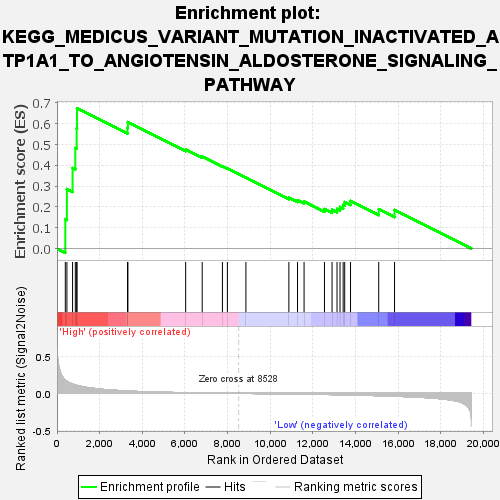
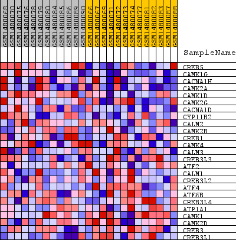
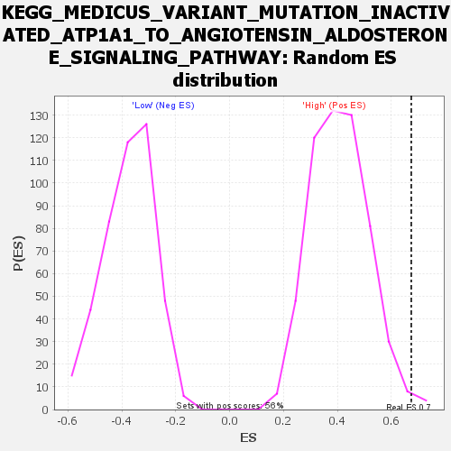

| Dataset | WG6v3.CYGB.cls#High_versus_Low.CYGB.cls#High_versus_Low_repos |
| Phenotype | CYGB.cls#High_versus_Low_repos |
| Upregulated in class | High |
| GeneSet | KEGG_MEDICUS_VARIANT_MUTATION_INACTIVATED_ATP1A1_TO_ANGIOTENSIN_ALDOSTERONE_SIGNALING_PATHWAY |
| Enrichment Score (ES) | 0.67442214 |
| Normalized Enrichment Score (NES) | 1.650861 |
| Nominal p-value | 0.008928572 |
| FDR q-value | 0.17032157 |
| FWER p-Value | 0.773 |

| SYMBOL | TITLE | RANK IN GENE LIST | RANK METRIC SCORE | RUNNING ES | CORE ENRICHMENT | |
|---|---|---|---|---|---|---|
| 1 | CREB5 | CREB5 | 389 | 0.180 | 0.1415 | Yes |
| 2 | CAMK1G | CAMK1G | 464 | 0.165 | 0.2860 | Yes |
| 3 | CACNA1H | CACNA1H | 730 | 0.127 | 0.3870 | Yes |
| 4 | CAMK2A | CAMK2A | 858 | 0.114 | 0.4830 | Yes |
| 5 | CAMK1D | CAMK1D | 922 | 0.109 | 0.5778 | Yes |
| 6 | CAMK2G | CAMK2G | 938 | 0.108 | 0.6744 | Yes |
| 7 | CACNA1D | CACNA1D | 3306 | 0.032 | 0.5808 | No |
| 8 | CYP11B2 | CYP11B2 | 3324 | 0.031 | 0.6079 | No |
| 9 | CALM2 | CALM2 | 6032 | 0.009 | 0.4767 | No |
| 10 | CAMK2B | CAMK2B | 6807 | 0.006 | 0.4422 | No |
| 11 | CREB1 | CREB1 | 7755 | 0.003 | 0.3957 | No |
| 12 | CAMK4 | CAMK4 | 7988 | 0.002 | 0.3854 | No |
| 13 | CALM3 | CALM3 | 8856 | -0.001 | 0.3416 | No |
| 14 | CREB3L3 | CREB3L3 | 10870 | -0.008 | 0.2449 | No |
| 15 | ATF2 | ATF2 | 11276 | -0.009 | 0.2325 | No |
| 16 | CALM1 | CALM1 | 11583 | -0.011 | 0.2262 | No |
| 17 | CREB3L2 | CREB3L2 | 12539 | -0.015 | 0.1901 | No |
| 18 | ATF4 | ATF4 | 12895 | -0.016 | 0.1866 | No |
| 19 | ATF6B | ATF6B | 13128 | -0.018 | 0.1904 | No |
| 20 | CREB3L4 | CREB3L4 | 13268 | -0.018 | 0.1998 | No |
| 21 | ATP1A1 | ATP1A1 | 13415 | -0.019 | 0.2096 | No |
| 22 | CAMK1 | CAMK1 | 13488 | -0.020 | 0.2236 | No |
| 23 | CAMK2D | CAMK2D | 13760 | -0.022 | 0.2291 | No |
| 24 | CREB3 | CREB3 | 15083 | -0.031 | 0.1893 | No |
| 25 | CREB3L1 | CREB3L1 | 15824 | -0.038 | 0.1855 | No |

